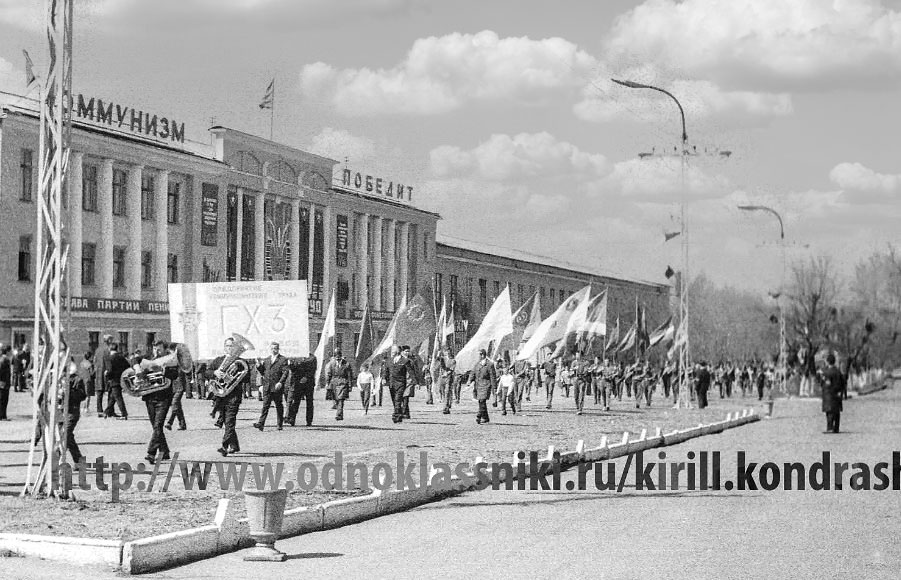

Коммунизм победитНа фото весна 1970 года, а осенью по повестки военкомата я был призван участвовать в Победе коммунизма в армии и уехал из города, как оказалось навсегда. Можно было бы участвовать в победе в аудиториях Владимирского политехнического института, но молодость и мудрость несовместимы, а родители были заняты стройками светлого будущего.  Я уже сомвелся в коммунизме, но рещил проверить, победит ли он в городе Гусь-Хрустальном, во всей Владимирской области и в остальном мире? А потом и в армии у меня усилилось недоверие к победной поступи коммунизма, но делать было нечего и я пошёл дальше изучать причины уничтожения самобытного города Гусь-Хрустальный. |